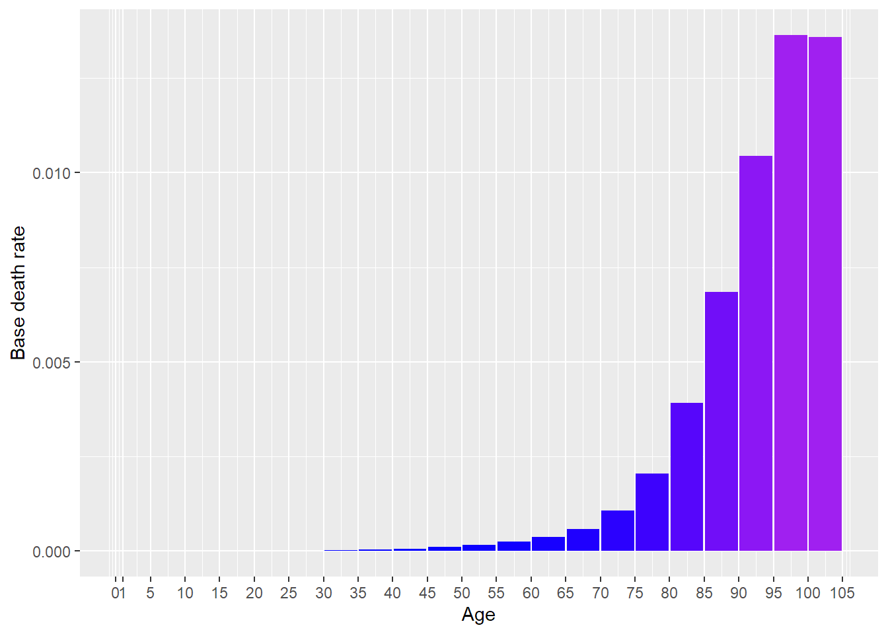
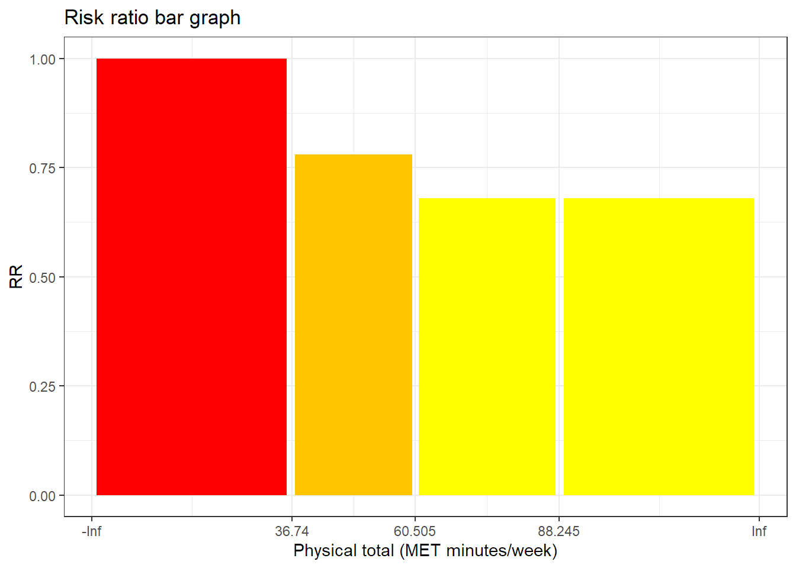
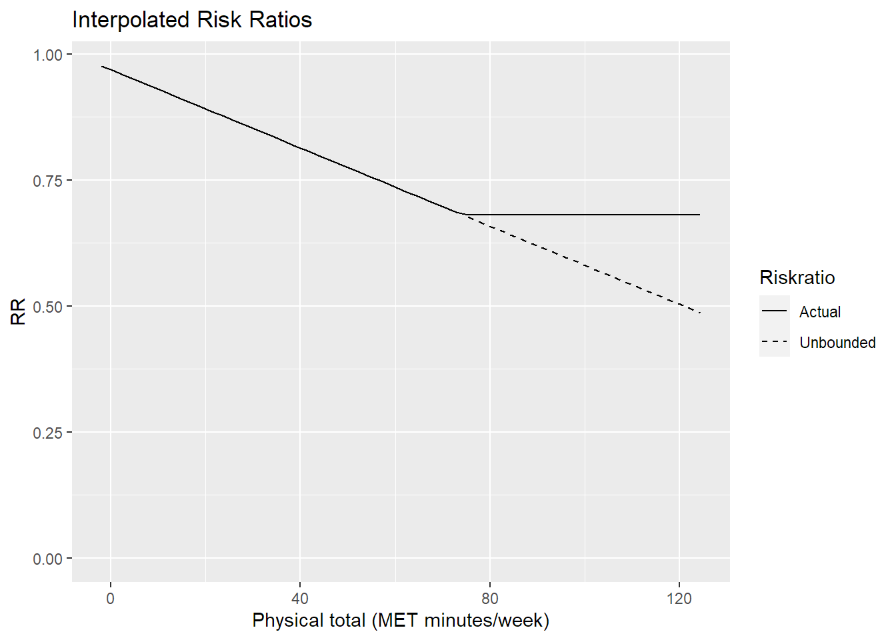
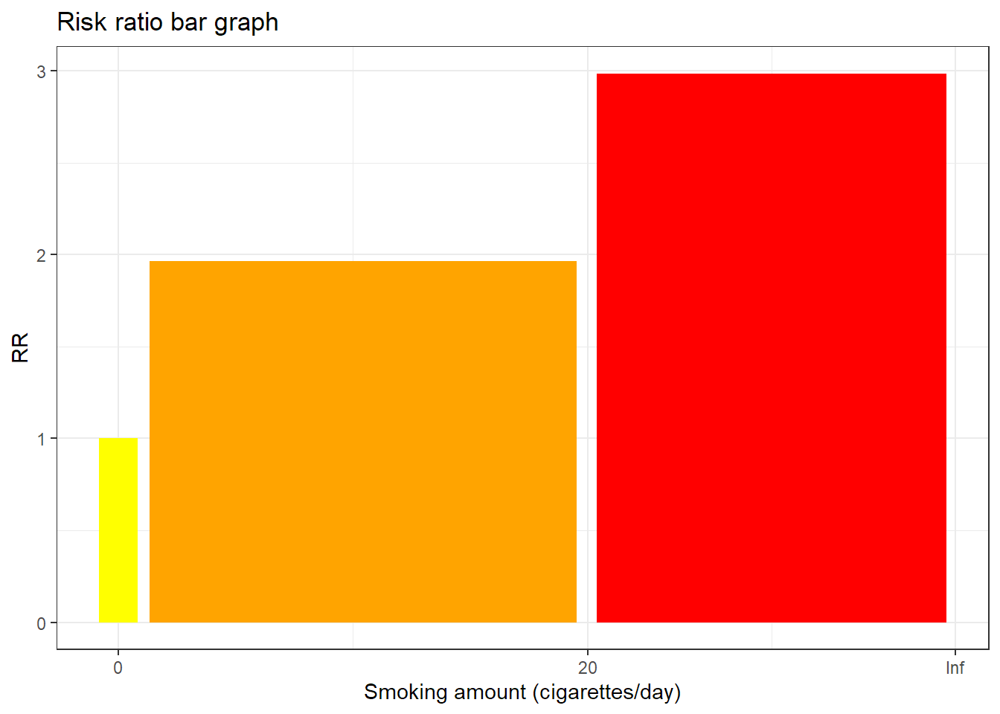
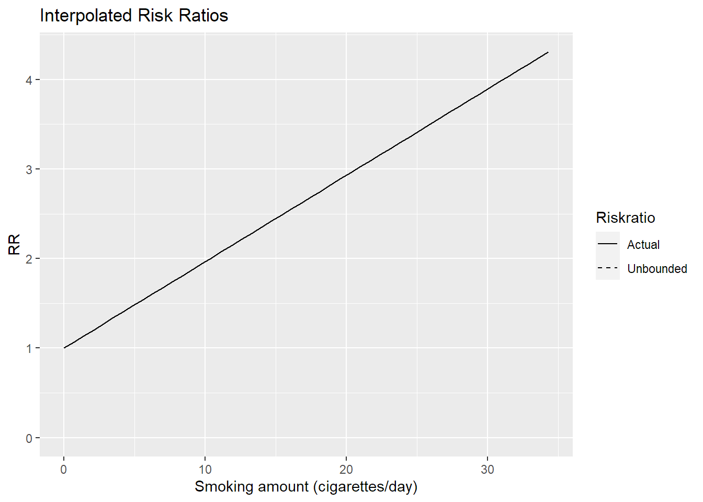

[auto-generated file]
Stroke is a death cause. It means that there is a certain probability that one dies from this.
Categories
Stroke is part of the following death cause categories
Risk factors
In the model Stroke has the following risk factors
Number of deaths
In 2014 Stroke was responsible for 5.07% of the deaths in the US. Below is a plot of how prevalent the death was for different ages (Xu et al. 2016)

Definition
The definition of dying from Stroke is to get any of the following ICD codes as the main cause of death on one’s death certificate. The percentage is the proportion of the deaths from Stroke who falls under the ICD code
I6 (100.00000%)
- I60: Nontraumatic subarachnoid hemorrhage (4.0%)
- I600: 0 Ntrm subarach hemorrhage from carotid siphon and bifurcation Nontraumatic subarachnoid hemorrhage from carotid siphon and bifurcation (0.063%)
- I602: Nontraumatic subarachnoid hemorrhage from anterior communicating artery (0.00075%)
- I604: Nontraumatic subarachnoid hemorrhage from basilar artery (0.00075%)
- I605: Nontraumatic subarachnoid hemorrhage from vertebral artery (0.00075%)
- I606: Nontraumatic subarachnoid hemorrhage from other intracranial arteries (0.024%)
- I607: 1 Nontraumatic subarachnoid hemorrhage from unsp intracran art Nontraumatic subarachnoid hemorrhage from unspecified intracranial artery (0.24%)
- I608: Other nontraumatic subarachnoid hemorrhage (0.2%)
- I609: Nontraumatic subarachnoid hemorrhage, unspecified (3.4%)
- I61: Nontraumatic intracerebral hemorrhage (12.0%)
- I610: Nontraumatic intracerebral hemorrhage in hemisphere, subcortical (0.26%)
- I611: Nontraumatic intracerebral hemorrhage in hemisphere, cortical (0.19%)
- I612: Nontraumatic intracerebral hemorrhage in hemisphere, unspecified (0.035%)
- I613: Nontraumatic intracerebral hemorrhage in brain stem (0.48%)
- I614: Nontraumatic intracerebral hemorrhage in cerebellum (0.33%)
- I615: Nontraumatic intracerebral hemorrhage, intraventricular (0.69%)
- I616: Nontraumatic intracerebral hemorrhage, multiple localized (0.0015%)
- I618: Other nontraumatic intracerebral hemorrhage (0.035%)
- I619: Nontraumatic intracerebral hemorrhage, unspecified (10.0%)
- I62: Other and unspecified nontraumatic intracranial hemorrhage (8.8%)
- I620: Nontraumatic subdural hemorrhage (1.9%)
- I621: Nontraumatic extradural hemorrhage (0.018%)
- I629: Nontraumatic intracranial hemorrhage, unspecified (6.9%)
- I63: Cerebral infarction (5.2%)
- I630: Cerebral infarction due to thrombosis of precerebral arteries (0.12%)
- I631: Cerebral infarction due to embolism of precerebral arteries (0.021%)
- I632: Cerebral infarction due to unspecified occlusion or stenosis of precerebral arteries (0.57%)
- I633: Cerebral infarction due to thrombosis of cerebral arteries (0.52%)
- I634: Cerebral infarction due to embolism of cerebral arteries (1.0%)
- I635: 0 Cerebral infrc due to unsp occls or stenosis of cerebral art Cerebral infarction due to unspecified occlusion or stenosis of cerebral arteries (0.45%)
- I636: Cerebral infarction due to cerebral venous thrombosis, nonpyogenic (0.00075%)
- I638: Other cerebral infarction (0.071%)
- I639: Cerebral infarction, unspecified (2.4%)
- I64 (49.0%)
- I67: Other cerebrovascular diseases (8.9%)
- I670: Dissection of cerebral arteries, nonruptured (0.003%)
- I671: Cerebral aneurysm, nonruptured (0.26%)
- I672: Cerebral atherosclerosis (1.8%)
- I673: Progressive vascular leukoencephalopathy (0.0083%)
- I674: Hypertensive encephalopathy (0.081%)
- I675: Moyamoya disease (0.035%)
- I676: Nonpyogenic thrombosis of intracranial venous system (0.00075%)
- I677: Cerebral arteritis, not elsewhere classified (0.043%)
- I678: Other specified cerebrovascular diseases (0.97%)
- I679: Cerebrovascular disease, unspecified (5.7%)
- I69: Sequelae of cerebrovascular disease (12.0%)
- I690: Sequelae of nontraumatic subarachnoid hemorrhage (0.052%)
- I691: Sequelae of nontraumatic intracerebral hemorrhage (0.15%)
- I692: Sequelae of other nontraumatic intracranial hemorrhage (0.1%)
- I693: Sequelae of cerebral infarction (0.36%)
- I694 (7.1%)
- I698: Sequelae of other cerebrovascular diseases (3.9%)
Source: Xu et al. (2016), (“ICD Order Files 2014,” n.d.)
Interaction
The combined risk ratio of all risk factors is computed using the formula
\[
RR=RR_{\text{Phys. total}} \cdot RR_{\text{Cigarettes}} \cdot RR_{\text{Greens}}
\]
The normalization factor is based on the joint distribution of all the risk factors and is computed using the formula
\[
P=P_{\text{Phys. total}} \cdot P_{\text{Cigarettes}} \cdot P_{\text{Greens}}
\]
Total physical activity time
Total physical activity time is a risk factor for Stroke.
Below is a plot of the risk ratios we have taken from the literature alterated to fit our model

Because the variable Total physical activity time is numeric, we have computed a smoothed approximation. 
Current smoking amount
Current smoking amount is a risk factor for Stroke.
Below is a plot of the risk ratios we have taken from the literature alterated to fit our model

Because the variable Current smoking amount is numeric, we have computed a smoothed approximation. 
References
Xu, Jiaquan, Kenneth D Kochanek, Sherry L Murphy, and Betzaida Tejada-Vera. 2016. “Deaths: Final Data for 2014.” National Vital Statistics Reports 65 (4).